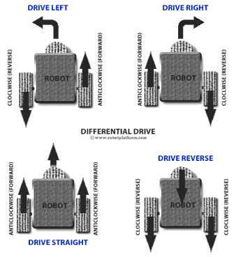
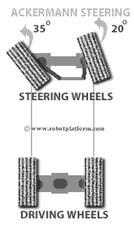
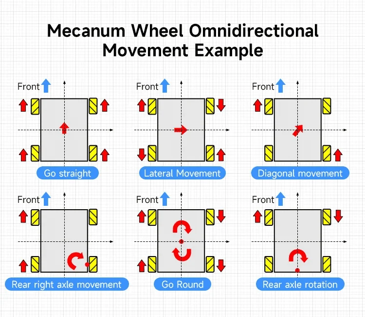

Steering & Drive Architecture. Kinematic Trade-Off Analysis & Mathematical Formulation.
Rigorous trade study and kinematics derivation comparing 4WD Differential / Skid Steering, Ackermann Steering, and Mecanum Omnidirectional Drive for airside runway FOD retrieval, authored by Hilbert Soh (A0308263H).
Author: Hilbert Soh (A0308263H)
This specification details the mathematical formulations, instantaneous centers of rotation (ICR), effective track width calibration ($W_{\text{eff}}$), ROS 2 Nav2 command integration, and empirical trade studies that justify selecting 4WD independent differential/skid steering over Ackermann and Mecanum architectures.
The steering architecture was evaluated against the operational requirements of the airside FOD retrieval mission. The autonomous UGV must first traverse relatively long runway sections at a target forward speed of 10–15 km/h, then transition to low-speed local manoeuvring when approaching a detected debris coordinate. The chosen drivetrain must therefore support both efficient straight-line transit and precise final positioning of the vacuum intake.
High-speed runway sweep capability to minimize runway occupancy and meet airside operational clearance windows between flight slots.
Able to handle asphalt, loose aggregate, and gravel. Drivetrain mechanisms cannot jam or ingest small debris particles.
Fewer joints, fewer points of backlash, and easier maintenance. Eliminates complex linkages vulnerable to tarmac vibration.
Minimize high-frequency vibration transmission to protect sensitive sensors (IMU, 3D LiDAR) and onboard computers.
Allow micro repositioning (zero-radius in-place rotation) for accurate FOD remediation and vacuum intake head alignment.
| Operational Requirement | Target Metric | Engineering Rationale & Operational Impact |
|---|---|---|
| Speed Capability | 10–15 km/h ($2.78\text{--}4.17\text{ m/s}$) | Minimises runway inspection cycle time to meet airside operational clearance windows between flight slots. |
| Fine Tuning in Position | Zero-Radius Pivot ($R = 0\text{ m}$) | Enables micro repositioning to place the rear vacuum intake head directly over detected debris coordinates without multi-point shunting. |
| Outdoor & FOD Tolerance | Asphalt & Gravel Immune | Airside tarmac contains loose bitumen aggregate, metal shavings, and gravel; drivetrain mechanisms must not jam or ingest particles. |
| Mechanical Simplicity | Fewer Joints & Backlash | Direct drive hubs eliminate steering linkages, kingpins, and servos, drastically reducing maintenance overhead and backlash. |
| Platform Stability | Low High-Frequency Vibration | Minimises high-frequency drivetrain vibration that corrupts IMU state estimation and degrades LiDAR SLAM point cloud quality. |
Three candidate steering architectures were evaluated against the five airside operational criteria. Click any candidate card below to inspect its mathematical formulation and detailed trade study modal:

Differential Drive (Skid-Steer) ↗
- + Zero radius turning allowing fine positioning
- + Able to handle speed requirement (10–15 km/h)
- + Easy to assemble and troubleshoot (Direct drive hubs & zero linkages)
- + Easy to integrate into programming and controls (ROS 2 Nav2)
- ~ Traction depends on tire used
- - Causes inaccuracy for localization due to wheel slippage (compensated via EKF sensor fusion)

Ackermann Steering ↗
- + Able to handle speed requirement (10–15 km/h)
- + Much better accuracy for localization (pure rolling)
- ~ Traction depends on tire used
- - Has minimum turn radius ($R_{\min} \ge 0.79\text{ m}$, swept $\ge 1.2\text{ m}$) — cannot pivot on the spot
- - Hard to design and troubleshoot (Uses linkages, kingpins, steering rods, servos)

Mecanum Wheel Drive ↗
- + Zero radius turning allowing fine positioning
- + Holonomic omnidirectional movement (lateral crabbing)
- - Unable to handle high speed ($v < 6\text{ km/h}$, roller slip)
- - Uses multiple rollers as 1 wheel — vulnerable to grit/gravel jamming
- - Requires frequent replacement of rollers on abrasive runway asphalt
| Steering Architecture | Zero-Radius Turning (Fine Positioning) | Speed Requirement (10–15 km/h) | Traction & Durability | Assembly & Maintenance Simplicity | Localization Accuracy | Selection Verdict |
|---|---|---|---|---|---|---|
| Differential Drive (Skid-Steer) | Yes ($R = 0\text{ m}$, in-place pivot) | Met (10–15 km/h capability) | High (Depends on tire used; pneumatic rubber on asphalt $\mu \approx 0.80$) | Easy to assemble & troubleshoot (Direct drive hubs, zero linkages) | Wheel slippage induces slip (Resolved via EKF IMU+GPS fusion) | SELECTED |
| Ackermann Steering | No (Has minimum turn radius $R_{\min} \ge 0.79\text{ m}$) | Met (10–15 km/h capability) | High (Pure rolling, depends on tire used) | Hard to design & troubleshoot (Linkages, kingpins, steering rods, servos) | Much better accuracy for localization | REJECTED |
| Mecanum Wheel Drive | Yes ($R = 0\text{ m}$, omnidirectional) | Unmet (Unable to handle high speed, $v < 6\text{ km/h}$) | Poor on asphalt (Split sub-rollers, roller wear & debris jamming) | High maintenance (Uses multiple rollers as 1 wheel; frequent replacement) | High roller slip causes continuous localization drift | REJECTED |
3.1 4WD Differential / Skid-Steer Kinematics
For platform control and odometry synthesis, the differential drive kinematics relate left and right wheel angular velocities ($\omega_L, \omega_R$), nominal wheel radius $r = 0.10\text{ m}$, and track width $W$:
Effective Track Width Calibration ($W_{\text{eff}}$): In a physical 4WD skid-steer chassis without articulated steering knuckles, turning induces lateral tire scrubbing. Consequently, the Instantaneous Centers of Rotation (ICR) shift longitudinally, causing the effective track width $W_{\text{eff}}$ to exceed the geometric distance between wheels ($W_{\text{eff}} > W_{\text{geom}}$):
Inverse Kinematics (Nav2 cmd_vel mapping): Given commanded linear velocity $v_x$ and yaw rate $\omega_z$:
3.2 Ackermann Steering Geometry & Turning Radius Bounds
To achieve pure rolling during turning without lateral slip, the inner ($\delta_i$) and outer ($\delta_o$) front steering angles must satisfy the geometric Ackermann condition:
The minimum theoretical kinematic turning radius measured from the rear axle midpoint is:
When accounting for outer chassis overhang ($W_{\text{body}} \approx 0.60\text{ m}$), the effective swept turning circle diameter exceeds $2.4 - 3.0\text{ m}$, mandating orbital loops to re-align with detected debris.
3.3 Mecanum 4-Wheel Forward & Inverse Kinematics
With $45^\circ$ angled rollers, half-wheelbase $L_x$ and half-track $L_y$:
Selection Rationale for 4WD Skid Steering
- In-Place Pure Pivot ($R = 0$): Eliminates multi-point turning when positioning the suction hood precisely over small debris coordinates ($v_x = 0$, $\omega_z \neq 0$).
- All-Weather Tarmac Traction ($\mu \approx 0.80 - 0.85$): High friction coefficient with pneumatic rubber tires on grooved runway asphalt ensures reliable ramp traversal ($15^\circ$) and emergency stopping distances.
- Direct Hub Reliability: Eliminates steering servos, tie-rod linkages, and kingpin bushings vulnerable to fatigue under high-frequency tarmac surface vibration.
- ROS 2 Nav2 Command Integration: Maps directly to ROS 2 Nav2 body-velocity commands $(v_x, \omega_z)$, simplifying translation to left/right wheel velocity setpoints.
Analysis & Limitations of Alternatives
- Ackermann Maneuvering Constraint: Theoretical $R_{\min} \ge 0.79\text{ m}$ (swept circle $\ge 2.4 - 3.0\text{ m}$) forces multi-point shunting maneuvers if a target debris coordinate is overshot.
- Mecanum Outdoor Reliability Risk: Exposed peripheral sub-rollers and small needle bearings are susceptible to jamming when traversing runway asphalt with loose bitumen aggregate, gravel, and metal shavings.
- Vibration Transmission Risk: Discontinuous roller contact transitions in Mecanum wheels generate high-frequency micro-vibrations ($30 - 80\text{ Hz}$ under load), which risks degrading IMU acceleration integration and blurring 3D LiDAR point cloud SLAM.
- Reduced Effective Traction: $45^\circ$ vector decomposition reduces effective tractive efficiency ($\mu_{\text{eff}} \approx 0.35 - 0.45$), increasing slip and power dissipation on wet or sloped runway asphalt.